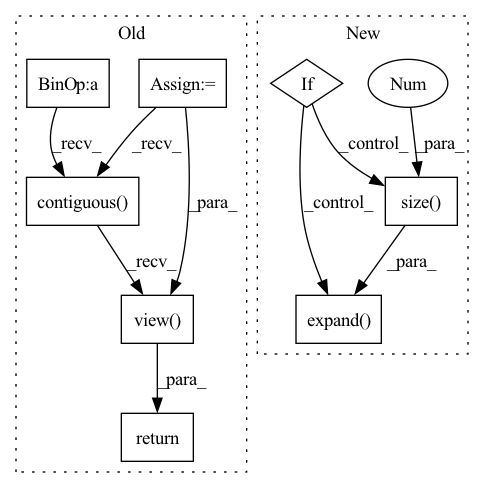

Pattern ID :2628

Before Change
_, _, tH, tW = target_size
if inference:
B = x.data.size(0)
C = x.data.size(1)
H = x.data.size(2)
W = x.data.size(3)
return x.view(B, C, H, 1, W, 1).expand(B, C, H, tH // H, W, tW // W).contiguous().view(B, C, tH, tW)
else:
return F.interpolate(x, size=(tH, tW), mode="nearest")
After Change
assert (x.data.dim() == 4)
// _, _, tH, tW = target_size
if inference:
//B = x.data.size(0)
//C = x.data.size(1)
//H = x.data.size(2)
//W = x.data.size(3)
return x.view(x.size(0), x.size(1), x.size(2), 1, x.size(3), 1).\
expand(x.size(0), x.size(1), x.size(2), target_size[2] // x.size(2), x.size(3), target_size[3] // x.size(3)).\
contiguous().view(x.size(0), x.size(1), target_size[2], target_size[3])
else:
return F.interpolate(x, size=(target_size[2], target_size[3]), mode="nearest")
In pattern: SUPERPATTERN
Frequency: 3
Non-data size: 8
Instances
Fragment ID: 14995748
Project Name: tianxiaomo/pytorch-yolov4
Commit Name: 1ff5a1085ce0c1b35c2ea45b707166ac404e0b66
Time: 2020-08-11
Author: ersheng@nvidia.com
File Name: models.py
M Class Name: Upsample
N Class Name: Upsample
M Method Name: forward(4)
N Method Name: forward(4)
M Parent Class: nn.Module
N Parent Class: nn.Module
M File Name: models.py
N File Name: models.py
M Start Line: 23
M End Line: 36
N Start Line: 25
N End Line: 39
'>
Before Change
Tensor: batch x height x width
k = 8
batch_size = patches.shape[0]
image_reshaped = patches.view(batch_size, height // k, width // k, k, k)
image_transposed = image_reshaped.permute(0, 1, 3, 2, 4)
return image_transposed.contiguous().view(batch_size, height, width)
class ChromaUpsampling(nn.Module):
Upsample chroma layers
After Change
self.y_table = y_table
def forward(self, x: torch.Tensor, factor: torch.Tensor) -> torch.Tensor:
if isinstance(factor, (int, float)):
out = x * (self.y_table * factor)
else:
b = factor.size(0)
table = self.y_table.expand(b, 1, 8, 8) * factor.view(b, 1, 1, 1)
out = x * table
return out
'>
Fragment ID: 14995744
Project Name: lornatang/real_esrgan-pytorch
Commit Name: edfbb6820fc2084c2ffe132e9b64a348a323d1e7
Time: 2022-06-16
Author: liuchangyu1111@gmail.com
File Name: imgproc.py
M Class Name: BlockMerging
N Class Name: _YDeQuantize
M Method Name: forward(3)
N Method Name: forward(4)
M Parent Class: nn.Module
N Parent Class: nn.Module
M File Name: imgproc.py
N File Name: imgproc.py
M Start Line: 1747
M End Line: 1760
N Start Line: 1325
N End Line: 1333
'>
Before Change
Tensor: batch x h*w/64 x h x w
height, _ = image.shape[1:3]
batch_size = image.shape[0]
image_reshaped = image.view(batch_size, height // self.k, self.k, -1, self.k)
image_transposed = image_reshaped.permute(0, 1, 3, 2, 4)
return image_transposed.contiguous().view(batch_size, -1, self.k, self.k)
class DCT8x8(nn.Module):
Discrete Cosine Transformation
After Change
self.c_table = c_table
def forward(self, x: torch.Tensor, factor: torch.Tensor) -> torch.Tensor:
if isinstance(factor, (int, float)):
out = x * (self.c_table * factor)
else:
b = factor.size(0)
table = self.c_table.expand(b, 1, 8, 8) * factor.view(b, 1, 1, 1)
out = x * table
return out
'>
Fragment ID: 14995785
Project Name: lornatang/real_esrgan-pytorch
Commit Name: edfbb6820fc2084c2ffe132e9b64a348a323d1e7
Time: 2022-06-16
Author: liuchangyu1111@gmail.com
File Name: imgproc.py
M Class Name: BlockSplitting
N Class Name: _CDeQuantize
M Method Name: forward(3)
N Method Name: forward(2)
M Parent Class: nn.Module
N Parent Class: nn.Module
M File Name: imgproc.py
N File Name: imgproc.py
M Start Line: 1533
M End Line: 1544
N Start Line: 1341
N End Line: 1349